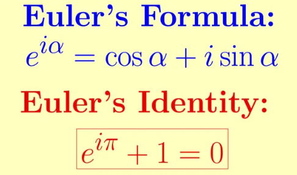

Leonhard Euler nació el 15 de abril de 1707 en Basilea, Suiza. Fue hijo de Paul Euler, un pastor protestante que también tenía conocimientos de matemáticas, y Marguerite Brucker. Desde pequeño mostró gran talento para el estudio y recibió enseñanzas matemáticas del reconocido matemático Johann Bernoulli.
Euler desarrolló la mayor parte de su carrera en la Academia de Ciencias de San Petersburgo, en Rusia, y más tarde en la Academia de Berlín, en Prusia. Fue matemático, físico y astrónomo, y es considerado uno de los científicos más productivos de la historia, ya que escribió cientos de artículos y libros que abarcan casi todas las áreas de las matemáticas de su tiempo.
Sus aportaciones fueron fundamentales en el desarrollo del cálculo diferencial e integral, la teoría de números, el álgebra, la mecánica, la óptica y la astronomía. Introdujo gran parte de la notación matemática moderna que aún se utiliza hoy, como el número e para la base de los logaritmos naturales, la letra i para la unidad imaginaria y la notación f(x) para expresar funciones. Una de sus fórmulas más famosas es la identidad de Euler, que relaciona los números e, i, π, 1 y 0 en una sola expresión considerada una de las más elegantes de las matemáticas.
A pesar de haber perdido la vista casi por completo en sus últimos años, Euler continuó trabajando y dictando investigaciones con una impresionante capacidad mental. Falleció el 18 de septiembre de 1783 en San Petersburgo, Rusia. Hoy es reconocido como uno de los matemáticos más importantes de todos los tiempos y una figura clave en el desarrollo de las matemáticas modernas.